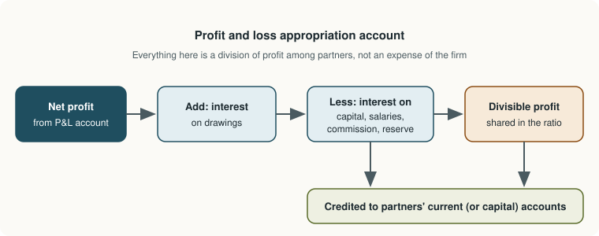

Chapter 10: Partnership Accounts¶
Capital and current accounts, the appropriation of profit, and an introduction to admitting a partner
Learning outcomes
After studying this chapter you should be able to:
- Describe a partnership and the main contents of a partnership deed.
- State the usual rules that apply when the deed is silent.
- Maintain partners' capital accounts under the fixed and the fluctuating capital methods.
- Prepare a profit and loss appropriation account, including interest on capital, interest on drawings and salaries.
- Compute interest on drawings by the product method and the average period method.
- Explain goodwill, the new profit-sharing ratio and the sacrificing ratio, and record the admission of a partner who brings a premium.
10.1 Partnerships and the deed¶
A sole proprietor eventually meets limits: of capital, of skill, of time. One answer is to join with others. A partnership is the relation between persons who have agreed to share the profits of a business carried on by all of them or by any of them acting for all. The persons are individually called partners and collectively a firm. In India the general law of partnership is the Indian Partnership Act, 1932; there is also a separate form, the limited liability partnership, governed by its own law, which is not covered here.
The essential features of an ordinary partnership are:
- an agreement, oral or written, between two or more persons;
- a business carried on with a view to sharing profits;
- mutual agency: each partner is an agent of the firm and of the other partners for the business of the firm;
- unlimited liability: partners are liable jointly and severally for the debts of the firm, to the full extent of their private assets.
Law may set an upper limit on the number of partners; check the current rules where it matters.
The partnership deed¶
The agreement is best put in writing, in a document called the partnership deed. A deed typically states:
- the name and address of the firm and the nature of its business;
- the names of the partners and the capital each contributes;
- the profit-sharing ratio;
- whether interest on capital is allowed and at what rate;
- whether interest on drawings is charged and at what rate;
- salaries or commission payable to partners;
- the rate of interest on loans by partners to the firm;
- how the accounts are kept and audited;
- the rules for the admission, retirement or death of a partner, including the valuation of goodwill;
- the method of settling disputes.
10.2 When the deed is silent¶
If the partners have not agreed on a matter, the law fills the gap. Under the Indian Partnership Act, 1932, unless the partners have agreed otherwise:
| Matter | Rule in the absence of agreement |
|---|---|
| Sharing of profits and losses | Equally |
| Interest on capital | Not allowed |
| Interest on drawings | Not charged |
| Salary or commission to a partner | Not allowed |
| Interest on a loan advanced by a partner | Allowed at 6% per annum, as a charge against profit |
Table 10.1. The usual rules when the partnership agreement is silent.
Example 10.1 No agreement on the sharing of profit
Xavier and Yusuf are partners with capitals of ₹2,00,000 and ₹1,00,000. On 1 April 2025 Xavier also lent the firm ₹50,000. There is no deed. The profit for 2025-26 before any interest is ₹1,23,000. Xavier wants profit shared in the capital ratio; Yusuf wants interest on capital at 10% and a salary of ₹2,000 a month. Settle the dispute.
With no agreement, neither claim succeeds: profits are shared equally, and no interest on capital or salary is allowed. Xavier is, however, entitled to interest on his loan at 6% per annum.
| Particulars | ₹ |
|---|---|
| Profit before interest | 1,23,000 |
| Less: Interest on Xavier's loan (6% × 50,000) | 3,000 |
| Profit to be shared | 1,20,000 |
| Xavier's share (1/2) | 60,000 |
| Yusuf's share (1/2) | 60,000 |
Interest on a partner's loan is a charge against profit (like interest on a bank loan), so it is deducted before the profit is divided.
10.3 Partners' capital accounts¶
Each partner has a capital account. There are two ways to maintain it.
Fixed capital method. Each partner has two accounts. The capital account records only the capital introduced or withdrawn by agreement; its balance stays the same from year to year unless capital is permanently changed. All the routine items (interest on capital, salary, share of profit, drawings, interest on drawings) go to a separate current account, whose balance changes every year and may be debit or credit.
Fluctuating capital method. Each partner has only a capital account, and all the items above go into it, so its balance changes every year.
| Point | Fixed capital method | Fluctuating capital method |
|---|---|---|
| Number of accounts per partner | Two: capital and current | One: capital |
| Capital balance | Unchanged unless capital is added or withdrawn | Changes every year |
| Profit, salary, interest, drawings | Recorded in the current account | Recorded in the capital account |
| Balance | Capital always credit; current may be debit | Normally credit |
| Interest on capital | Easy: on the fixed balance | Needs care: on a changing balance |
Table 10.2. Fixed and fluctuating capitals.
10.4 The profit and loss appropriation account¶
A partnership prepares its trading and profit and loss account exactly as a sole trader does (Chapter 8). The net profit is then divided among the partners in a separate profit and loss appropriation account. The items in it are not expenses of the firm; they are ways of dividing the profit among the partners according to the deed.

| Debit side | Credit side |
|---|---|
| Interest on capital | Net profit brought down from profit and loss account |
| Salaries and commission to partners | Interest on drawings |
| Transfer to reserve | |
| Profit shared among partners (balancing figure) |
Table 10.3. The contents of the profit and loss appropriation account.
Caution
Keep charges and appropriations apart. Charges against profit, such as interest on a partner's loan, rent paid to a partner for premises, and salaries of employees, go to the profit and loss account and must be paid whether there is a profit or not. Appropriations, such as interest on capital and partners' salaries, go to the appropriation account and are made only out of profit. If the profit is not enough to cover them in full, the deed decides; a common rule is that the available profit is divided in the ratio of the appropriations.
10.5 Interest on capital and on drawings¶
Interest on capital compensates partners who have invested more than others. It is computed at the agreed rate on the opening capital, adjusted for any additional capital introduced or capital withdrawn during the year, for the period it was in the business.
Interest on drawings compensates the firm, and thus the other partners, when a partner withdraws money in advance of his share of profit. It is computed at the agreed rate for the period from the date of each drawing to the end of the year. The product method multiplies each drawing by the months it was outstanding:
When equal amounts are drawn at regular intervals, the average period method is quicker: interest is charged on the total drawings for the average period. For drawings made evenly through the year (or, in an exam, when the dates are not given), the average period is taken as six months. For equal monthly drawings at the start of each month, it is 6.5 months; at the end of each month, 5.5 months.
Example 10.2 Interest on drawings by the product method
A partner made these drawings in the year ended 31 March 2026: ₹10,000 on 1 June 2025, ₹6,000 on 1 October 2025 and ₹8,000 on 1 January 2026. Interest on drawings is charged at 10% per annum.
| Date | Amount (₹) | Months to 31 March | Product (₹) |
|---|---|---|---|
| 1 June 2025 | 10,000 | 10 | 1,00,000 |
| 1 October 2025 | 6,000 | 6 | 36,000 |
| 1 January 2026 | 8,000 | 3 | 24,000 |
| Total | 24,000 | 1,60,000 |
Interest = 1,60,000 × 10/100 × 1/12 = ₹1,333 (to the nearest rupee).
10.6 A complete example¶
Example 10.3 Appropriation account and current accounts
Arjun and Bina are partners sharing profits in the ratio 3:2. Their fixed capitals on 1 April 2025 were Arjun ₹3,00,000 and Bina ₹2,00,000. The deed provides:
- interest on capital at 8% per annum;
- a salary to Bina of ₹4,000 a month;
- interest on drawings at 6% per annum.
During 2025-26 Arjun drew ₹30,000 and Bina ₹24,000, evenly through the year. The net profit for the year, before any of the above, was ₹2,40,000. The current accounts had no opening balances.
Workings
- Interest on capital: Arjun 8% × 3,00,000 = ₹24,000; Bina 8% × 2,00,000 = ₹16,000.
- Salary to Bina: 4,000 × 12 = ₹48,000.
- Interest on drawings (average period 6 months): Arjun 30,000 × 6% × 6/12 = ₹900; Bina 24,000 × 6% × 6/12 = ₹720.
- Divisible profit = 2,40,000 + 900 + 720 − 24,000 − 16,000 − 48,000 = ₹1,53,620.
- Arjun's share = 1,53,620 × 3/5 = ₹92,172; Bina's share = 1,53,620 × 2/5 = ₹61,448.
Profit and Loss Appropriation Account for the year ended 31 March 2026
| Particulars | ₹ | ₹ | Particulars | ₹ | ₹ |
|---|---|---|---|---|---|
| To Interest on capital: Arjun | 24,000 | By Profit and Loss A/c (net profit) | 2,40,000 | ||
| Bina | 16,000 | 40,000 | By Interest on drawings: Arjun | 900 | |
| To Salary to Bina | 48,000 | Bina | 720 | 1,620 | |
| To Profit transferred: Arjun (3/5) | 92,172 | ||||
| Bina (2/5) | 61,448 | 1,53,620 | |||
| 2,41,620 | 2,41,620 |
Partners' Current Accounts
| Particulars | Arjun (₹) | Bina (₹) | Particulars | Arjun (₹) | Bina (₹) |
|---|---|---|---|---|---|
| To Drawings | 30,000 | 24,000 | By Interest on capital | 24,000 | 16,000 |
| To Interest on drawings | 900 | 720 | By Salary | 48,000 | |
| To Balance c/d | 85,272 | 1,00,728 | By Share of profit | 92,172 | 61,448 |
| Total | 1,16,172 | 1,25,448 | Total | 1,16,172 | 1,25,448 |
| By Balance b/d | 85,272 | 1,00,728 |
The capital accounts stay at ₹3,00,000 and ₹2,00,000. In the balance sheet, the partners' interest is shown as capital (₹5,00,000) plus current account balances (₹1,86,000).
Under the fluctuating capital method, the same items would go into the capital accounts, whose closing balances would be Arjun 3,00,000 + 85,272 = ₹3,85,272 and Bina 2,00,000 + 1,00,728 = ₹3,00,728.
Check. The total credited to the partners (24,000 + 16,000 + 48,000 + 92,172 + 61,448 = ₹2,41,620) less the interest on drawings charged to them (₹1,620) equals the firm's net profit of ₹2,40,000.
Key idea
Interest on capital, salaries and interest on drawings do not change the total profit going to the partners; they change only how it is divided. In Example 10.3 the partners together receive exactly ₹2,40,000 net, whatever the rates in the deed.
10.7 Changes in a partnership: an overview¶
A partnership changes whenever a partner joins, retires or dies, or the partners change their profit-sharing ratio. Each change ends the old agreement and begins a new one, so the firm must settle the rights of the partners up to that date. This is called the reconstitution of the firm. A full treatment belongs to a second course; the main ideas are:
- Goodwill. A successful firm is worth more than the sum of its separate assets, because of its reputation, location, customers and staff. This extra value is goodwill. An incoming partner who will share in future profits that the old partners' efforts made possible should compensate them for their share of goodwill. A simple method of valuing it is the average profits method: goodwill = average profit of a number of past years × an agreed number of years' purchase.
- New and sacrificing ratios. When a partner joins, the old partners give up (sacrifice) part of their shares. The sacrificing ratio is each old partner's old share minus his new share. Compensation for goodwill is shared by the old partners in the sacrificing ratio. When a partner retires, the remaining partners gain his share, in the gaining ratio.
- Revaluation. Assets and liabilities are revalued at the date of the change, and the resulting profit or loss belongs to the old partners in their old ratio. It is recorded in a revaluation account.
- Accumulated profits and reserves in the books at the date of the change also belong to the old partners in their old ratio.
Example 10.4 Admission of a partner with a premium for goodwill
Arjun and Bina (ratio 3:2, fixed capitals) admit Chirag on 1 April 2026 for a one-fifth share of future profits. Chirag brings ₹1,50,000 as capital and his share of goodwill in cash. Goodwill is valued at one year's purchase of the average profit of the last three years, which were ₹1,60,000, ₹2,00,000 and ₹2,40,000. Arjun and Bina will share the remaining four-fifths in their old ratio.
Goodwill. Average profit = (1,60,000 + 2,00,000 + 2,40,000) ÷ 3 = ₹2,00,000. Goodwill = 2,00,000 × 1 = ₹2,00,000. Chirag's share = 1/5 × 2,00,000 = ₹40,000.
New ratio. Arjun 3/5 × 4/5 = 12/25; Bina 2/5 × 4/5 = 8/25; Chirag 1/5 = 5/25. New ratio 12:8:5.
Sacrificing ratio. Arjun 3/5 − 12/25 = 15/25 − 12/25 = 3/25; Bina 2/5 − 8/25 = 10/25 − 8/25 = 2/25. Sacrificing ratio 3:2, the same as the old ratio, because the old partners keep their old ratio between themselves.
| Particulars | Dr (₹) | Cr (₹) |
|---|---|---|
| Bank A/c ... Dr | 1,90,000 | |
| To Chirag's Capital A/c | 1,50,000 | |
| To Premium for Goodwill A/c | 40,000 | |
| (Being capital and premium for goodwill brought in by Chirag) | ||
| Premium for Goodwill A/c ... Dr | 40,000 | |
| To Arjun's Current A/c | 24,000 | |
| To Bina's Current A/c | 16,000 | |
| (Being the premium shared by the old partners in the sacrificing ratio 3:2) |
Arjun receives 3/5 × 40,000 = ₹24,000 and Bina 2/5 × 40,000 = ₹16,000. (With fluctuating capitals the premium would be credited to their capital accounts.)
10.8 Summary¶
Summary
- A partnership is an agreement to share the profits of a business carried on by all or any of the partners for all; partners have mutual agency and unlimited liability. The deed records the terms.
- Without agreement: profits shared equally; no interest on capital, no interest on drawings, no salary; interest on partners' loans at 6% per annum.
- Under the fixed capital method, capital accounts stay constant and current accounts take profits, salaries, interest and drawings; under the fluctuating method, all go to the capital account.
- The appropriation account divides net profit: add interest on drawings; deduct interest on capital, salaries, commission and reserves; share the balance in the agreed ratio.
- Interest on drawings is computed by products or by the average period. Charges (loan interest, rent to a partner) go to the profit and loss account; appropriations go to the appropriation account.
- On admission, the incoming partner compensates the old partners for goodwill in the sacrificing ratio; assets are revalued and reserves distributed in the old ratio.
10.9 Exercises¶
Exercise 1
Priya and Qadir share profits 2:1. Capitals: Priya ₹4,00,000, Qadir ₹2,00,000. Interest on capital is 5%; Qadir gets a salary of ₹30,000 a year. Net profit is ₹1,20,000. Prepare the appropriation account.
Answer
Interest on capital: Priya ₹20,000, Qadir ₹10,000. Salary to Qadir ₹30,000. Divisible profit = 1,20,000 − 20,000 − 10,000 − 30,000 = ₹60,000: Priya 2/3 = ₹40,000, Qadir 1/3 = ₹20,000.
| Particulars | ₹ | Particulars | ₹ |
|---|---|---|---|
| To Interest on capital: Priya | 20,000 | By Net profit | 1,20,000 |
| To Interest on capital: Qadir | 10,000 | ||
| To Salary to Qadir | 30,000 | ||
| To Share of profit: Priya | 40,000 | ||
| To Share of profit: Qadir | 20,000 | ||
| Total | 1,20,000 | Total | 1,20,000 |
Exercise 2
A partner withdrew ₹5,000 at the beginning of every month during the year ended 31 March 2026. Interest on drawings is 9% per annum. Compute the interest.
Answer
Total drawings ₹60,000; average period for drawings at the start of each month = 6.5 months. Interest = 60,000 × 9/100 × 6.5/12 = ₹2,925.
By products: the drawings are outstanding for 12, 11, ..., 1 months, a total of 78 months, so the product is 5,000 × 78 = 3,90,000, and 3,90,000 × 9/100 × 1/12 = 2,925.
Exercise 3
In Exercise 1, suppose the net profit was only ₹45,000 and the deed says interest on capital and salary are appropriations. How is the profit divided?
Answer
The appropriations due are interest 20,000 + 10,000 and salary 30,000, a total of ₹60,000, more than the profit of ₹45,000. Dividing the profit in the ratio of the appropriations (20,000 : 10,000 : 30,000 = 2 : 1 : 3): Priya interest 45,000 × 2/6 = ₹15,000; Qadir interest 45,000 × 1/6 = ₹7,500; Qadir salary 45,000 × 3/6 = ₹22,500. Nothing is left to share in the profit-sharing ratio.
Exercise 4
Mona and Nita share profits 5:3. They admit Ojas for a 1/4 share, which he takes 1/8 from each. Find the new ratio and the sacrificing ratio.
Answer
Mona: 5/8 − 1/8 = 4/8; Nita: 3/8 − 1/8 = 2/8; Ojas: 1/8 + 1/8 = 2/8. New ratio 4:2:2 = 2:1:1. Sacrificing ratio = 1/8 : 1/8 = 1:1.
Exercise 5
Distinguish between interest on a partner's capital and interest on a partner's loan.
Answer
Interest on capital is an appropriation of profit, allowed only if the deed provides for it and only out of profit; it is debited to the appropriation account. Interest on a loan is a charge against profit, payable whether or not there is a profit (at 6% per annum if not agreed); it is debited to the profit and loss account and credited to the partner's loan account.
Exercise 6
The average profit of a firm for the last four years is ₹90,000. Goodwill is valued at two years' purchase. A new partner joins for a 1/6 share and brings his share of goodwill in cash. How much does he bring?
Answer
Goodwill = 90,000 × 2 = ₹1,80,000. New partner's share = 1/6 × 1,80,000 = ₹30,000.
10.10 Quiz¶
Check your understanding of Chapter 10
Exercise 1
In the absence of a partnership deed, profits are shared
- in the capital ratio
- equally
- in the ratio of time devoted
Answer
equally
Exercise 2
A partner lends the firm ₹40,000 and there is no agreement on interest. What is the annual interest on the loan, in rupees?
Answer
2400 / 2,400 / ₹2,400
6% of 40,000 is 2,400.
Exercise 3
Under the fixed capital method, a partner's share of profit is credited to his
- capital account
- current account
- loan account
Answer
current account
Exercise 4
Interest on drawings is
- credited to the profit and loss appropriation account
- debited to the profit and loss appropriation account
- debited to the profit and loss account
Answer
credited to the profit and loss appropriation account
Exercise 5
Partners' salaries are
- a charge against profit
- an appropriation of profit
Answer
an appropriation of profit
Exercise 6
Old ratio 3:2; a new partner takes 1/5 and the old partners keep their ratio between themselves. What is the sacrificing ratio? (write as a:b)
Answer
3:2 / 3 : 2